数据库复习合集（教材）
第一章 数据库系统概论
1.1 信息与数据
1 数据
数据不仅包括数字、字母、文字和其他特殊字符，而且还包括图形、图像、声音等多媒体数据。
2 信息
信息是经过加工处理的数据，是对数据的具体描述。数据是信息的载体而信息则是对数据的语义解释。
3 数据库
数据库是长期储存在计算机内的、有组织的、可共享的大量数据集合。
4 数据库管理系统
数据库管理系统是位于用户与操作系统之间的一层数据管理软件，其主要目标是使数据成为方便各种用户使用的资源，提高数据的安全性，完整性和可用性。
PPT：一个能够让用户定义，创建和维护数据库以及控制对数据库访问的软件系统
5 元数据
元数据即描述数据的数据，相当于数据字典。主要是描述数据属性的信息。
1.2 数据模型
**数据模型就是对现实世界的模拟。**现有的数据库系统均建立在数据模型的基础上，因此数据模型使数据库系统的核心和基础，现有的数据模型分为概念数据模型和逻辑数据模型。
1.2.1 组成要素
- 数据结构——数据结构用于描述数据库的组成对象以及对象之间的联系。（层次，网状，关系）
- 数据操作——数据操作就是对数据库中的各种对象的实例（或取值）执行允许的操作。（查询，插入，修改，删除）
- 数据的约束条件（数据完整性）——实体完整性，参照完整性，自定义完整性。
1.2.2 概念数据模型※
概念数据模型是用户容易理解的，对现实世界特征的数据抽象，它与具体的数据库管理系统无关，是数据库设计员与用户之间进行交流的语言。
1.2.3 逻辑数据模型
逻辑数据模型是用户从数据库中所看到的数据模型，是具体的DBMS所支持的数据模型。
层次模型
优点
- 数据结构比较简单清晰
- 对层次联系的部门描述非常自然、直观、容易理解。这是层次数据库的突出优点。
缺点
- 实现复杂
- 难于管理
- 实现的限制
- 缺乏标准
- 缺乏结构独立性
- 应用程序编写和使用复杂性
网状模型
优点
- 能够更加方便地描述现实世界，节点之间可以有多种联系。
- 具有良好的性能，存取效率高。
缺点
- 系统复杂性
- 缺乏结构独立性
- 用户不容易掌握和使用
1.2.4 物理数据模型
- 面向具体的DBMS，也面向机器
- 描述数据在存储介质上的组织结构
1.3 数据库管理技术的产生和发展
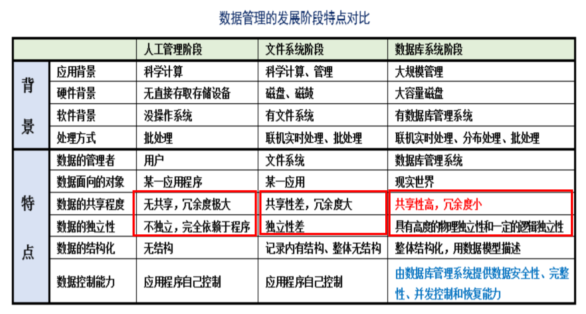
人工管理阶段——数据不能共享，冗余度极大，数据无独立性。
文件系统阶段——数据共享性差，冗余度大，数据独立性差。
数据库系统阶段——数据共享性高，冗余度小，具有高度的物理独立性和一定的逻辑独立性
数据库系统和文件系统的主要区别是，文件系统不能解决数据冗余和数据独立性的问题，而数据库系统能够解决。
1.4 数据库管理系统的功能与特点
1.4.1 数据库管理系统的功能（5）
- 数据定义功能（DDL，定义数据库，表，视图，索引）
- 提供数据定义语言，对各级数据模式进行精确定义。
- 数据操纵功能（DML，插入，修改，删除，查询）
- 提供数据操纵语言DML，可以对数据库中的数据进行追加、插入、修改、删除、检索等操作。
- 数据库运行控制功能
- ※提供数据库控制语言DCL，可以对数据库中的数据进行并发控制、数据的安全性控制、数据的完整性控制，数据的恢复。
- 提供数据控制语言（DCL）
- 数据并发控制
- 数据安全性控制
- 数据完整性控制
- 数据恢复
- 数据库的建立和维护功能
- ※数据库的建立和维护功能主要包括数据库初始数据的输入，转换功能，数据库的转储、恢复功能，数据库的重组织功能和性能监视、分析功能等。
- 数据库的初始数据的载入，转换功能
- 数据库的转储，恢复功能
- 数据库的重组织功能
- 性质监视和分析功能
- 数据组织、存储和管理功能（数据字典）
- DBMS分类组织、存储和管理各种数据，包括数据字典、用户数据、数据的存取路径。确定以何种文件结构和存取方式在存储上组织这些数据，实现数据之间的联系。
1.4.2 数据库管理系统的特点（也是数据库系统的特点）
- 数据结构化
- 数据库管理系统实现整体数据的结构化，这是数据库的主要特征之一，也是数据库管理系统与文件系统的本质区别。
- 数据的共享性高，冗余度低，易扩充
- 数据的独立性高
- 数据由DBMS统一管理和控制
数据库系统的特点
- 数据按照一定的数据模型组织，描述和储存
- 可为各种用户共享
- 冗余度较小
- 数据独立性高
- 易扩展
使用数据库的优点
数据库的出现使得信息系统的研制从围绕加工数据的程序为中心，转变到围绕共享的数据库来进行。这便于数据的几种管理，也提高了程序设计和维护的效率，提高了数据的利用率和可靠性。当今的大型信息管理系统均是以数据库为核心的。数据库管理系统是计算机应用中的一个重要阵地。
1.5 数据库系统的结构
1.5.1 数据库三级模式结构
外模式（视图）、模式、内模式
1 模式
模式也称逻辑模式，是数据库中全体数据的逻辑结构和特征的描述，是所有用户的公共数据视图。
一个数据库只有一个模式
2 外模式
外模式也称子模式或用户模式，是数据库用户看见和使用的局部数据的逻辑结构和特征的描述，是数据库用户的数据视图。
一个数据库可以有多个外模式
3 内模式
内模式也称存储模式，全面描述了数据库中是数据存储的全部细节和存取路径，是数据在数据库内部的表示方式。
一个数据库只有一个内模式。
1.5.2 数据库二级映像与数据独立性
外模式/模式映像：保证数据逻辑独立性（模式改变时，修改映像使外模式可以不变、应用程序也不变）
模式/内模式映像：保证数据物理独立性（存储结构改变时，修改映像使模式、外模式、应用程序可以不变）
性能变坏是改变内模式最常见的原因。
逻辑数据独立性：逻辑数据独立性是指外部模式不受模式变化影响。
物理数据独立性：物理数据独立性是指模式不受内部模式变化的影响。
1.5.3 数据库的体系结构
1.5.4 数据库系统的组成
- 硬件系统
- 数据库
- 数据库管理系统及相关软件
- 数据库管理员DBA
- 用户
1.6 数据库语言
- 数据定义语言DDL：CREATE，ALTER，DROP
- 数据操纵语言DML，可以实现对数据库中的数据进行追加、插入、修改、删除检索等操作：SELECT，UPDATE，INSERT，DELETE
- 数据控制语言DCL：REVOKE，GRANT
- 事务控制语言：事务控制语言用于提交或回滚事务：如COMMIT或ROLLBACK
第二章 关系模型与关系代数
2.1 关系模型
关系是笛卡尔积的一个有意义的子集
2.1.1 基本概念
在关系模型中，实体和实体间的联系都是通过关系来表示的。
1 关系实例
关系实例是由明明的若干列和行组成的表格。
每一行称为一个元组，元组的列数相同，关系实例中元组的数目称为基数。
2 关系模式
关系模式是对关系的描述，需要包含如下部分：
（1）关系名。关系名在数据库中必须唯一。
（2）关系中的属性名以及相关联的域名。属性名是赋予关系实例中列的名字。关系中所有的列都必须被命名，且同一关系中的列不能重名。域名是为定义好的值集锁赋予的名字。在编程语言中，域名通常为数据类型。
（3）完整性约束。它是施加在该关系模式实例上的限制。
3 关系数据库
在一个给定的应用领域中，所有实体及实体之间的联系的关系集合构成一个关系数据库。关系数据库是关系的有限集合。关系模式的集合称为数据库模式，对应的关系实例集合称为数据库实例。
关系数据库是关系的有限集合。因为关系由两部分组成，所以关系数据库也由两部分组成，即关系模式的集合以及对应的关系实例的集合。关系模式的集合称为数据库模式，对应的关系实例集合称为数据库实例。
4 关系操作方式
集合操作
2.1.2 关系模型的数据结构※
- 关系模型就是用二维表的形式表示实体和实体间联系的数据模型
- 在关系模型中，实体和实体之间的联系是通过关系来表示的。
（1）关系（关系实例）：**关系是笛卡尔积的一个有意义的子集。**一个关系就是一张二维表，通常将一张没有重复行和重复列的二维表看成一个关系。
- 关系表中的每一列都是不可再分的基本属性
- 表中各属性不能重名
- 表中的行列次序并不重要，即可以交换行、列的前后顺序。每个关系都有一个关系名。
（2）元组：表中的一行（即一条记录）表示一个实体。关系是由元组组成的。
（3）属性：二维表中的每一列在关系中称为属性。每一个属性都有一个属性名，属性值则是个元组属性的取值。
（4）域：属性的取值范围称为域。
（5）度：属性域的个数称为关系的目或者度
（6）分量：元组中的一个属性值。
（7）键：关系中能唯一区分不同元组的属性或属性集合，称为关系的一个键，或者称为关键字或码。需要强调的是，关键字的属性值不能为“空值”，空值无法唯一地区分元组。
（8）候选键：关系中能够成为关键字的属性或属性组合可能不是唯一的，凡在关系中能够唯一区分却低估不同元组的属性或属性组合，称为候选键。
（9）主键：当一个关系中由多个候选键时，从中选定一个作为关系的主键，关系中主键是唯一的。每个关系中都必定有且只有一个主键。
（10）外键：设是关系中某个属性或属性组合而非该关系的键，但却是另一个关系的主键，则称为关系R的外键。其中关系R称为参照关系。
（11）关系模式：对关系的描述，它是型，是静态的。
2.1.3 数据操作
- 关系操作的特点——集合操作
- 关系代数和关系演算。关系代数是用对关系的运输算来表达查询要求的。关系演算是用谓词来表达查询要求的。
- 关系数据语言
- 关系代数语言，如ISBL
- 关系演算语言，包括元组关系演算语言和域关系演算语言（如BQE）
- 具有关系代数和关系演算双重特点的语言，如SQL
- 关系数据库管理系统——RDBMS
2.1.4 数据约束
（1）数据模型中固有的约束。例如，要求关系中不能有重复元组的约束就是一个固有约束。
（2）可以在数据模型中的模式中直接表述的约束，通常用DDL加以指定。关系模型的完整性约束就是可以在模式中直接表述的约束。
（3）不能在数据模型的模式中直接表述的约束，因此必须由应用程序表示和执行。
（4）最后一类重要的约束是数据依赖，包括函数依赖和多值依赖。他们主要用于测试数据库设计的好坏。
2.2 关系数据结构
2.2.1 关系
关系可以由三种类型，基本关系，查询表和视图表（是虚表）
2.2.2 关系的性质※
（1）每一列的分量必须来自同一个域，必须是同一类型的数据。
（2）不同的列可来自同一个域。
（3）列的顺序可以任意交换
（4）关系中的元组的顺序可任意。
（5）关系中不允许出现相同的元组
（6）关系中每个分量必须是不可分割的数据项。
2.2.3 关系模式
一个关系模式对应一个关系的结构，每个RDBMS都必须有一个数据定义语言来定义关系数据库模式。要为数据库模式指定完整性约束，并希望此模式的所有有效数据库状态都保证这个约束。完整性约束通常认为是数据库模式的一个组成成分。
2.3 关系操作
查询可分为选择，连接，投影，并，交，差，除，笛卡尔积等（有重命名吗？）。其中选择，投影，并，差，笛卡尔积是5种基本操作。
2.4 关系的完整性
- 实体完整性（必须满足）
- 参照完整性（必须满足）
- 自定义完整性（非必须满足）
2.4.1 实体完整性
实体完整性要求表中的所有行都有唯一的标识符，称为主键。实体完整性规则规定基本关系的所有主关键字对应的主属性都不能取空值。
2.4.2 参照完整性
若属性F是基本关系R的外键，它与基本关系S的主键相对应（基本关系R和S不一定是不同的关系），则对于R中每个元组在F上的值必须为：或者为空值，或者等于S中某个元组的主键值。
简而言之，外码取值必须为：（1）取空值；（2）被参照关系表中某个元组的主码值。
2.4.3 自定义完整性
自定义完整性则是根据应用环境的要求和实际的需要，对某一具体应用所涉及的数据提出约束性条件。
2.5 关系数据模型的优缺点
2.5.1 优点
（1）关系数据模型与非关系数据模型不同，它是建立在严格的数学概念基础上的。
（2）无论实体还是实体之间的联系都用关系来表示，对数据的检索结果也是关系，概念单一，其数据结构简单，清晰。
（3）关系数据模型的存取路径对用户透明，从而具有更高的数据独立性，更好的安全保密性，简化了程序员的工作和数据库开发建立的工作。
（4）关系数据模型具有丰富的完整性，如实体完整性、参照完整性和自定义完整性，大大降低了数据的冗余和数据不一致的概率。
2.5.2 缺点
（1）**对“现实世界“的表达能力弱。**关系数据模型将”现实世界“中的实体分割成几张表来存储，以物理表示法来反应实体结构，这样效率会比较差，常常要在查询处理中进行很多连接操作。
（2）由于存取路径对用户透明，查询效率往往不如非关系数据模型。因此，为了提高性能，必须对用户的查询请求进行优化，这就增加了开发数据库管理系统的负担。
（3）**关系数据模型只有一些固定的操作集，如面向集合和记录的操作，操作是在SQL规格说明中提供的。**但是，SQL目前不允许指定新的操作。因此，在给许多”现实世界“对象的行为建模就有了太多的限制。
（4）**不能很好的支持业务规则，很多商业化系统不能完全支持实体和参照完整性、域等业务规则，所以需要将他们内置到应用程序中。**这样当然是危险的，而且容易导致做重复的工作。更糟糕的是，可能还会引起不一致现象。
2.6 关系代数
关系代数中的操作可以分为以下三类：
- 传统的集合运算：并，差，交，笛卡尔积
- 专门的关系运算，选择、投影、连接、除、更名
- 扩展的关系运算：广义投影、聚集函数和分组、递归闭包
2.6.1 连接
- 内连接
- 外连接
2.6.2 广义投影
就是投影里面可以写表达式
第三章 数据库设计过程与方法
根据用户需求研制数据库结构的过程
- 结构设计——静态模型设计
- 行为设计——动态模型设计
数据库设计目标：为用户和各种应用系统提供一个信息基础设施和高效率的运行环境。
3.1 数据库涉及概述
3.1.1 数据库的设计方法
1、直观涉及法
2、新奥尔良设计法
- 需求分析（分析用户需求）
- 概念设计（信息分析和定义）
- 逻辑设计（设计实现）
- 物理设计（物理数据库设计）
3、面向对象设计法
4、计算机辅助设计法
3.1.2 数据库开发生命周期方法
3.1.3 数据库设计的基本过程※
- 需求分析
- 概念设计
- 逻辑设计
- 物理设计
- 实现
- 运行与维护
3.2 需求分析
3.3 数据库概念设计
概念模型将具体的客观现实世界 进行抽象的理解和表达，是实现从现实世界到数字化表示的过渡形式。数据库概念设计将用户的需求抽象为用户与开发人员都能接受的概念模型，是用户现实需求与数据库产品之间的纽带。
- 自底向上
- 自顶向下
- 逐步扩张
- 混合策略
概念设计的工具：E-R模型
3.4 数据库逻辑设计与优化
逻辑设计的任务就是把概念设计阶段生成的全局E-R图，转换为特定DBMS产品所能支持的数据模型。
3.5 数据库的物理设计
- 存储结构设计
- 存取方法设计
- 物理结构的评价
3.6 数据库的实施和运行维护
- 实际数据库结构的建立
- 加载数据
- 应用程序开发和调试
- 数据库试运行
- 数据库的备份和恢复
- 数据库的完整性和安全性
- 数据库性能满足既定的要求
- 数据库的重组和重构
第四章 实体-联系模型
4.1 实体-联系模型概述
4.1.1 实体集
实体集就是具有相同属性的实体集合。eg：银行的所有客户的集合可以定义为实体集合。
4.1.2 属性
1、简单属性和复合属性
2、单值属性和多值属性
3、派生属性
4、空值属性
4.2 约束
4.3 实体-联系图
4.4 扩展的实体-联系模型特性
1、特殊化/概化
2、属性继承
3、特殊化过程
4、概化过程
4.5 实体联系设计
4.5.1 E-R图设计
1、设计局部E-R图
- 属性是不可分的最小数据项
- 属性不能与其他的实体具有联系，联系只能发生在实体之间
2、全局E-R图集成
（1）消除冲突
- 属性冲突
- 命名冲突
- 结构冲突
（2）消除冗余
（3）模式重构
3、验证整体概念模型
第五章 规范化
5.1 关系模式设计中的问题
- 数据冗余
- 操作异常
- 更新异常——破坏数据的一致性
- 删除异常——删除了不该删除的数据
- 插入异常——无法插入（实体完整性规则）
5.2 函数依赖
5.2.1 函数依赖的定义
函数依赖是指一个关系表中属性（列）之间的联系
- 平凡函数依赖
- 非平凡函数依赖
5.2.2 Armstrong 公理
5.2.3 函数依赖与码的联系※
- 设为中的属性或属性组合，若$K\longrightarrow U KR$的候选码，若候选码多于一个，则选定其中的一个为主码。
- 关系模式中属性或属性组合并非的码，但是另一个关系模式的码，则称是的外码。
5.2.4 属性集的闭包
5.2.5 FD推理规则的完备性
5.2.6 FD集的最小依赖集
- 第一步，将右边全部变为单属性
- 第二步，在G的每个FD中消除左边冗余的属性
- 第三步，在G中消除冗余的FD
5.3 模式分解
5.3.2 无损分解——数据等价
5.3.3 保持依赖——依赖等价
5.4 范式
1NF：在关系模式R的每个关系实例r中，如果每个属性都是不可再分的原子值，那么称R是第一范式的模式。
2NF：如果关系模式R∈1NF，且每个非主属性完全依赖于候选码，那么称R属于2NF的模式。
3NF：如果关系模式R∈1NF，且每个非主属性都不传递依赖于R的候选码，那么称R属于3NF的模式。
需要掌握2NF和3NF的分解算法
第六章 基础SQL语言
6.1 SQL概述
SQL特点
（1）非过程化语言
（2）统一的语言
（3）面向集合的操作方式
（4）可独立使用又可嵌入主语言使用（交互式，嵌入式）
6.2 数据库基本结构定义
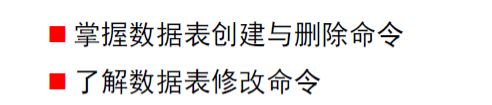
6.3 数据查询语句基本结构
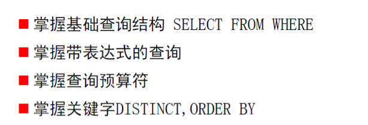
6.4 集合运算
6.5 连接查询
- 内连接
- 条件连接
- 自然连接
- 自连接
- 外连接
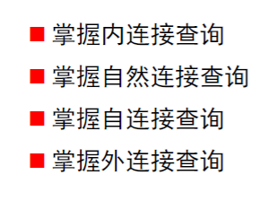
6.6 嵌套查询
6.7 数据修改
-
INSERT INTO 表名(属性列表) VALUES
-
INSERT INTO 表名(属性列表) SELECT
-
UPDATE 基表名 SET 属性列名=表达式 WHERE 行选条件
-
不加WHERE就是无条件更新
-
DELETE FROM 基表名 WHERE 行选条件
6.8 视图※
基本表：独立存在的表，一个关系对应一个表
视图：由基本表导出的表。是虚表，在数据库中只存放视图定义。
联系：概念上二者等同，用户可以对二者执行查询操作，在视图上定义视图
区别：基本表：实表，视图：虚表
6.8.1 视图的定义
视图是一张表，但是是一张特殊的表，是从一张或者多张表导出的表。但是视图与表不同的地方在于，视图是一张虚表，即视图所对应的数据不进行实际存储，数据库中只存储视图的定义，在对视图的数据进行操作时，系统根据视图的定义取操作与视图相关联的基表。
6.8.4 视图的作用
合理使用视图能给用户带来很多好处
1、视图能简化用户的操作
2、提高数据的安全性
3、视图对重构数据库提供一定程度的逻辑独立性
4、针对同一数据，视图可以为不同类型的用户提供不同的视角。（视图为用户提供多个视角看待同一数据）
5、保证数据的完整性
6、利用视图可以清晰的表达查询
6.9 完整性约束
完整性约束是加在数据库模式上的一个具体条件，它规定什么样的数据能够存储到数据库系统当中。
- PRIMARY KEY约束
- UNIQUE 约束
- NOT NULL约束
- CHECK约束
- FOREIGN KEY 约束
6.10 索引 ※
为了加速对表中数据行检索而创立的一种分散的存储结构，索引由索引页面组成，每个页面有两列，第一列为索引键，第二列为指针，指向物理数据位置。
索引类似于词典的索引，索引是关于数据位置信息的关键字表。
数据库中的索引是一个表中时所包含的值的列表，其中注明了表中包含各个值得记录所在的存储位置
6.10.1 聚集索引和非聚集索引
根据索引键值的顺序与数据表的物理顺序是否相同，可以把索引费城两种类型，若索引键值的逻辑顺序与索引所服务的表中相应行的物理顺序相同，则该索引成为聚集索引，反之为非聚集索引。（在一个基本表上，最多只能建立一个聚簇索引）一般来说，聚簇索引的效率高于非聚簇索引。
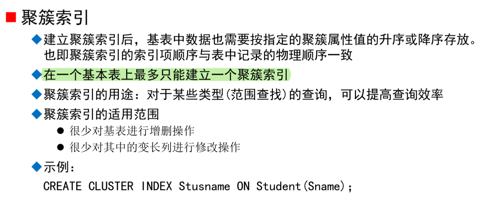
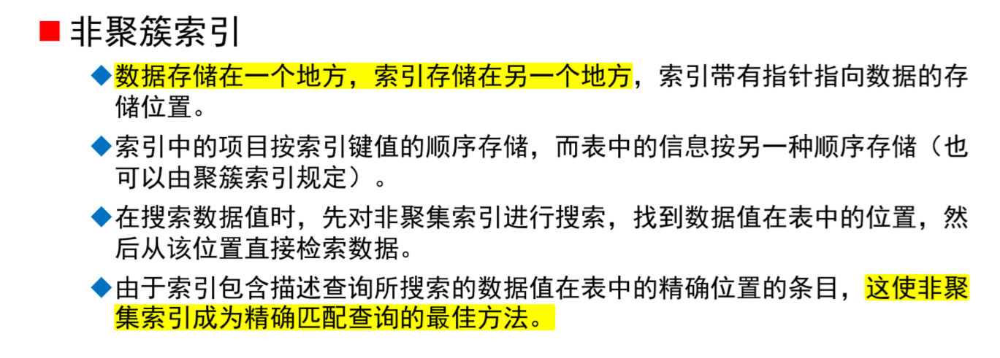
6.10.2 索引分类
- 普通索引
- 唯一值索引
- 主键索引
- 特殊的唯一值索引，不允许为空
- 组合索引
6.10.3 索引创建
Create xxx index 索引名 on 表名（表中列的名）
xxx放索引的类型
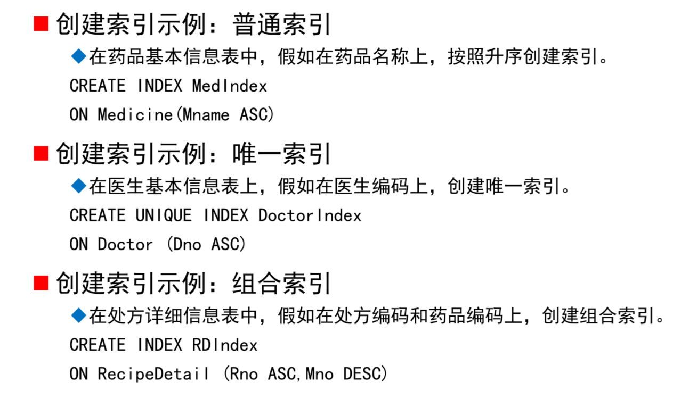
6.10.4 索引删除
DROP Index 索引名
6.10.5 索引原则（4）※
- 选择数据量大的表建立索引
- 建立索引的数量要适量
- 选择合适的时机建立索引
- 优先考虑主键列建立索引
第七章 数据库安全
7.1 授权
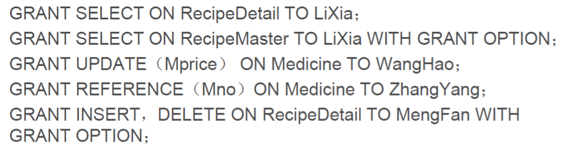
7.2 收权
7.3 自主访问控制
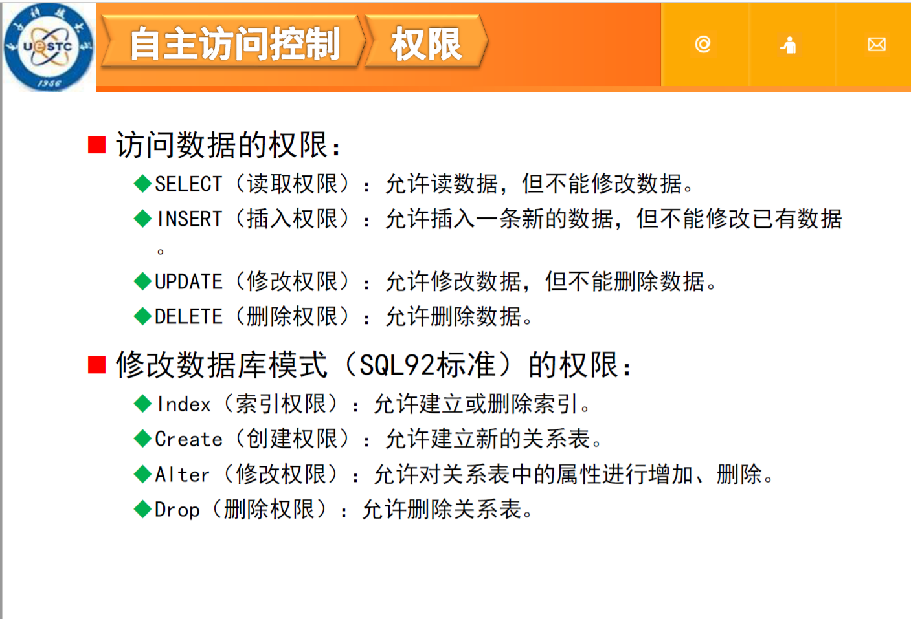
第八章 事务并发
8.1 会出现的问题
- 产生不一致的结果
- 并发执行的错误
- 何时更新数据库
事务时用户定义的一个数据库操作序列，这些操作要么全做要么全不做，是一个不可分割的工作单位。
8.2 事务的特性
原子性，一致性，隔离性，持续性（ACID）


8.3 事务并发
I/O和CPU等可以并行交叉运行
- 改善系统的资源利用率
- 减少短事务的等待时间
8.4 事务并发带来的问题
- 丢失更新

- 读脏数据

- 不可重复读
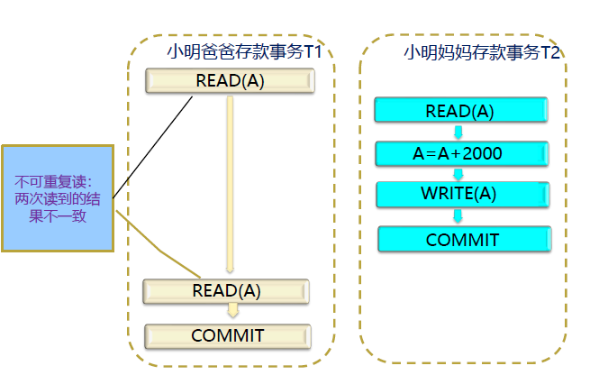
- 幻读（和不可重复读比较像但是是表级的）

8.5 事务隔离级别
- 读未提交
- 一个事务可以读取另一个未提交事务的数据。
- 读提交
- 就是一个事务要等另一个事务提交后才能读取数据。
- 重复读
- 在开始读取数据（事务开启）时，不再允许修改操作
- 序列化
- 是最高的事务隔离级别，在该级别下，事务串行化顺序执行。
以上所有隔离性级别都不允许“脏写”（写脏数据，丢失更新），即如果一个数据项已经被另一个尚未提交或终止的事务写入，则不允许对该数据项执行写操作。所以都解决了丢失更新的问题。
第九章 可串行化调度
9.1 串行调度
不同事务的活动在调度中是一个接一个执行的，没有交叉的运行
9.2 可串行化调度
- 调度是可串行化的，多个事务交叉调度的结果与某一个串行调度的结果相同
- DBMS认为事务串行调度的结果标尺了数据库的一致性质，都是正确的。
- 一个调度如果是可串行化的，系统认为其调度是一个调度，保持了数据库的一致性
eg: 并行调度与串行调度结果相同，因此此该调度是可串行的调度。
9.3 指令冲突
- 读相同数据，不冲突
- 读写相同数据，冲突
- 写相同数据，冲突
- 读写不同数据，不冲突
9.4 冲突等价
若调度S中属于不同事务的两条操作指令是不冲突的，则可以交换两条指令的执行顺序，得到一个新的调度S′。称调度S与调度S′冲突等价的（conflict equivalent）。
9.5 冲突可串行化
若一个调度冲突等价于一个串行调度，则该调度是冲突可串行化的。
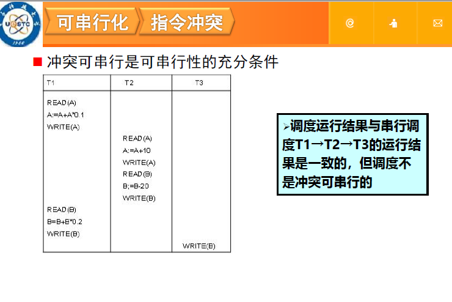
9.6 视图等价
对同一事务集，如果两个调度S1和S2在任何时候都保证每个事务读取相同的值，写入数据库的最终状态也是一样的，则称调度S1和S2视图等价
9.7 视图可串行化
如果某个调度视图等价于一个串行调度，则称这个调度是视图可串行化的。
如果调度是冲突可串行化的，则该调度一定是视图可串行化的，但反过来未必成立。
判断调度是否是冲突可串行化的，使用前驱图，如果前驱图中存在环，那么调度S是不可串行化的。
9.8 可恢复性
调度S中，事务Ti如果读取了事务Tj修改过的数据，则事务Ti必须等事务Tj提交后才能提交。
第十章 基于锁的并发控制协议
10.1 封锁
- 指事务在对数据库进行读写操作之前，必须先得到对操作对象的控制权力。
- 先要对将执行读、写操作的数据库对象申请锁，在获得该数据库对象的控制权力后，才能进行相应地读、写操作。
- 封锁是实现数据库并发控制的重要手段。
10.2 锁管理器
- 事务执行过程中锁的申请和释放由DBMS中的锁管理器负责
- 锁管理器维护一张哈希表——锁表
- 对每个数据库对象，如果其上有锁，那么锁表指明持有该锁的事务。
- 锁表包含的信息包括：每个数据库对象上已有的锁的个数、锁的类型以及一个指向申请锁队列的指针。
10.3 锁的类型
- 共享锁（S锁）：如果事务Ti申请到数据项Q 的共享锁，则Ti可以读数据项Q，但不能写Q。
- 排它锁（X锁）：如果事务Ti申请到数据项Q 的排它锁，则Ti可以读数据项Q，也可以写Q。
10.4 锁的相容性质

10.5 增加更新锁
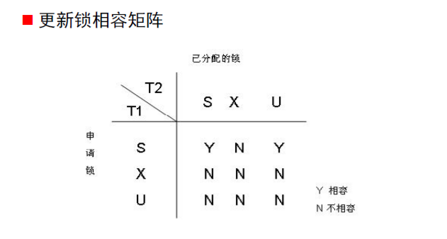
10.6 三级锁
- 一级封锁：修改数据加x锁直到事务结束才释放
- 二级封锁：在以及封锁的基础上，加了一条；T事务在读取数据R之前必须先对其加上S锁，读完释放S锁
- 三级封锁协议：一级封锁协议加上事务T在读取数据R之前必须先对其加S锁，直到事务结束才释放
一级锁解决丢失更新，二级封锁解决读脏数据和丢失更新，三级封锁解决丢失更新，读脏数据，不可重复读。
10.7 两段锁协议
是指所有事务分为两个阶段提出加锁和解锁申请：
- 增长阶段：在对任何数据进行读写操作前，首先申请并获得该数据的封锁。
- 收缩阶段：在释放一个封锁后，事务不再申请和获得其他的任何封锁。
两段锁协议是保证冲突可串行化的充分条件，但该协议不保证不发生死锁。
10.7.1 严格两阶段锁
- 除要求满足两段锁协议规定外，还要求事务的排它锁必须在事务提交之后释放。
- 解决级联回滚问题
10.7.2 强两端锁
- 除要求满足两段锁协议规定外，还要求事务的所有锁都必须在事务提交之后释放。
- 进一步解决了不可重复读的问题
10.8 两阶段锁总结
- 从两段锁协议到严格两段锁协议，再到强两段锁协议，事务持锁的时间不断增长。这不但保证事务的并发调度是冲突可串行化的，还不断增强了数据库的一致性保证。
- 但带来的另一方面的问题是并发度的降低，以及死锁出现可能性的增加。
- 目前，大多数的DBMS都采用严格两段锁协议或强两段锁协议。
第十一章 数据库恢复技术
11.0 日志记录※
日志是DBMS用来记录事务对数据库更新操作的文件。日志是日志记录的序列。日志记录有几种类型，其中一种日志记录叫更新日志记录，记录事务对数据库的写操作。
11.1 后像后写
事务执行时，后像在事务提交后才写入数据库恢复过程是忽略未完成的事务，重复已提交的事务。
恢复的过程，就是将提交过事务Ti更新的所有数据项的值设为新的值

11.2 后像前写
后像在事务提交前完全写入数据库
仍然是日志先写的规则
如果事务提交，则

事务恢复过程，将事务Ti更新的所有数据项的值设为旧的值。
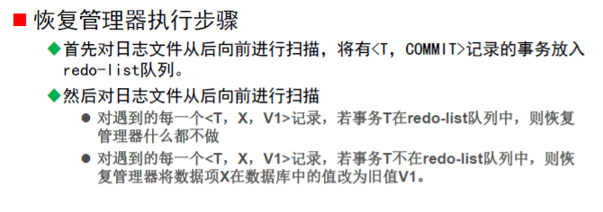
11.3 后像前后写
被修改数据项写入磁盘的时间可以在日志记录<T，COMMIT>之前进行，也可以放在之后进行。
写入的更新日志记录由４个部分组成。日志记录<T，X，V1，V2>表示：事务Ｔ对数据项Ｘ执行写操作，写前的旧值为V1，写后的新值为V2
仍然遵循日志先写。

11.4 等幂操作
多次执行和一次执行的效果是完全相同的。
11.5 检查点
利用日志进行数据库恢复时，恢复管理器必须检查日志，确定哪些事务需要REDO，哪些事务需要UNDO。一般来说，需要搜索整个日志才能做出决定。
但是搜索整个日志将耗费大量的时间
解决办法是系统定期或不定期地建立检查点（CheckPoint），保存数据库的状态。
11.5.1 提交一致性检查点
就是当前所有事情都完成，并且新的事情不准开始
- 新的事务不能开始直到检查点完成。
- 现有的事务继续执行直到提交或中止，并且相关数据都写入稳定存储器。
- 将当前日志缓冲区中的日志记录写回稳定存储器中的日志文件。
- 将日志记录
写入稳定存储器。检查点操作完成。
11.5.2 高速缓存一致性检查点
- 新的事务不能开始直到检查点完成。
- 已存在的事务不允许执行新的更新操作，如写缓冲块或写日志记录。
- 将当前日志缓冲区中的日志记录写回稳定存储器中的日志文件。
- 将当前数据缓冲区中的所有数据记录写入磁盘。
- 将日志记录<checkpoint，L>写入稳定存储器，其中L是所有活动事务的列表。
11.6 数据转储
11.6.1静态转储
- 在系统中无运行事务时进行转储
- 转储开始时数据库处于一致性状态
- 转储期间不允许对数据库的任何存取、修改活动
- 优点：实现简单
- 缺点：降低了数据库的可用性
- 转储必须等用户事务结束
- 新的事务必须等转储结束
11.6.2 动态转储
- 转储操作与用户事务并发进行
- 转储期间允许对数据库进行存取或修改
- 优点
- 不用等待正在运行的用户事务结束
- 不会影响新事务的运行
- 缺点
- 不能保证副本中的数据正确有效
- 利用动态转储得到的副本进行故障恢复
- 需要把动态转储期间各事务对数据库的修改活动登记下来，建立日志文件
- 后备副本加上日志文件才能把数据库恢复到某一时刻的正确状态
11.6.3 完全转储
每次转储全部数据库
11.6.4 增量转储
只转储上次转储后更新过的数据
11.6.5 完全转储和增量转储的对比
- 从恢复角度看，使用完全转储得到的后备副本进行恢复往往更方便
- 但如果数据库很大，事务处理又十分频繁，则增量转储方式更实用更有效
第十二章 故障种类及恢复策略
12.1 故障分类
- 事务故障
- 逻辑错误
- 系统错误

-
系统故障
包括硬件故障、数据库软件或操作系统的漏洞造成的系统停止运转。它导致系统易失性存储器中的内容丢失，事务处理停止，但非易失性存储器中的内容不会受到破坏。
-
介质故障
- 在数据传送操作过程中由于磁头损坏或故障造成磁盘块上的内容丢失。
- 需使用其他非易失性存储器上的数据库后备副本进行故障的恢复。
12.2 故障恢复
- 事务故障的恢复：利用日志文件撤销此事务对数据库已经进行做过的修改。（见前面）
- 系统故障的恢复：利用日志文件回滚（ UNDO ）未完成事务，重做（ REDO ）已提交事务。
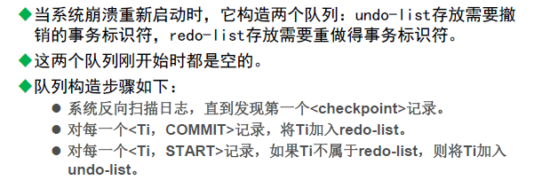
后像前写，后像后写，后像前后写的规则同上面说的规则一样。
- 介质故障的恢复
- 装入最近的完全转储后备副本。
- 若数据库副本是动态转储的，还需要同时装入转储开始时刻的日志文件副本，利用恢复系统故障的方法将数据库恢复到某个一致性状态。
- 如果有后续的增量转储，按照从前往后的顺序，根据增量转储来修改数据库。
- 装入转储结束后的日志文件副本，重做已完成的事务。
- 首先反向扫描日志文件，找出故障发生时已经提交的事务，将事务标识符写入 redo list 。
- 然后正向扫描日志文件，对 redo list 中的所有事务进行 redo 操作。
- 装入最近的完全转储后备副本。